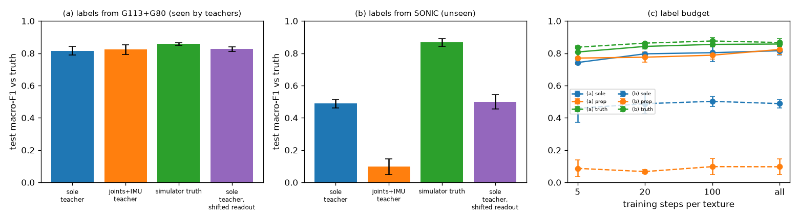

The project, step by step
Twelve steps, in the order they happened. For each: the question, what was done, what came out, and what it means. Every step links to its full page.
Simulation only. Nothing here comes from the real sole yet.
Part one · what the sole can feel
1
A first sole with eight zones
Step 1, first run
- The question
- Does a sole that feels pressure and sideways force help a humanoid tell what it is standing on?
- What I did
- Built a simulated sole with eight pressure zones per foot for the Booster K1 in MuJoCo. Trained a classifier to name six kinds of floor, with and without the sole, and to estimate friction.
- The result
- Naming the floor: 0.80 without the sole, 0.86 with pressure. Adding sideways force (shear) lowered the friction error from 0.166 to 0.150, less than the improvement set as the target beforehand.
- What it means
- The sole helps. Shear helped less than hoped, and friction turned out to be measurable only when the foot is close to slipping.
2
A finer sole, and three ways of walking
Step 1, second run
- The question
- Does a detailed pressure map do better, and does it still work when the robot walks differently?
- What I did
- Rebuilt the sole with 19 by 8 pressure points and four shear arrows per foot. Recorded 6,139 episodes with two flat-foot gaits and one human-like heel-to-toe gait.
- The result
- Naming the floor: 0.89 with the sole against 0.82 from joint sensors alone. Knowing whether the foot is supported: 0.93 against 0.76. A lifted robot is noticed in 0.1 s instead of 0.3 s. On a gait never seen in training, a sole-only model scores 0.53 and a model that also reads joints 0.07.
- What it means
- The clearest gain is knowing about foot support, and a model that reads only the sole carries over to a new gait where a joint-based one does not.
3
How many sensing points are worth having?
Step 1, third run
- The question
- Is a denser sole always better?
- What I did
- Pooled the pressure map down to 4, 8 and 18 zones per foot and tested each with and without shear, on familiar data, on a new gait, and with the sensor model changed.
- The result
- On familiar data more points help: 0.78 with 4 zones, 0.86 with all 152 points. With a changed sensor the order reverses: 0.69 with 4 zones, 0.48 with the full map. Four shear arrows help at every density.
- What it means
- Detail in the pressure map is fragile in simulation. Four pressure zones with four shear arrows per foot is the combination that holds, so everything after this uses only that.
Part two · teaching the camera, six floor types
4
Give the robot eyes
Step 2
- The question
- What did the robot see just before each step?
- What I did
- Replayed the recorded episodes exactly and rendered them through a camera on the torso, with photo textures on the floor. Some floors were made to deceive: they look like one type and behave like another.
- The result
- 54,010 footsteps from 1,572 episodes, each with the picture before the step and the sole reading after it. A quarter of the textures and all deceptive floors are kept for testing only.
- What it means
- This is the dataset every later comparison uses. Building it also exposed a gap: the simulated sole does not register a force that pushes along it, as at toe-off.

5
Train two teachers
Step 2
- The question
- How well can the floor be named after the step, from the sole and from the joints?
- What I did
- Trained one classifier on the sole's four zones and four arrows, and one on joint sensors, both on two gaits only.
- The result
- On those gaits they tie: 0.804 and 0.805. On the third gait the sole teacher keeps 0.399 and the joint teacher drops to 0.095, which is guessing.
- What it means
- Both can label steps for the camera on familiar gaits. Only the sole is still useful on a new one.
6
Let the teachers train the camera
Step 2
- The question
- Does a camera taught by the sole learn the floor, and is the sole a better teacher than the joints?
- What I did
- Took a frozen vision model (DINOv3) and trained a small part on top, three times: with the sole's labels, the joint teacher's labels, and perfect labels as the ceiling.
- The result
- Familiar gaits: 0.82 from the sole, 0.82 from the joints, 0.86 from perfect labels. New gait: 0.49 from the sole, 0.10 from the joints. On deceptive floors the camera scores about 0.1 and the sole after the step 0.82.
- What it means
- The camera does learn from touch. The sole is the better teacher exactly when the gait is new. A camera cannot see what a deceptive floor hides.

7
Try a large language-and-vision model
Step 2
- The question
- Can a general 7-billion-parameter model simply be asked what the floor is?
- What I did
- Asked Qwen2.5-VL for the floor type in real floor photos and in the simulated frames, then tuned it on the sole's labels.
- The result
- Real photos, no training: 0.68. Simulated frames: 0.34, rising to 0.72 after tuning. After that tuning its real-photo score fell to 0.38.
- What it means
- It knows something about real floors out of the box, but it is weaker than the small trained model, and tuning it on simulation damages what it knew.
8
Have someone else check
Step 2
- The question
- Do the numbers survive a re-check by someone who did none of the work?
- What I did
- An independent re-check recomputed every headline number with its own code, searched for leaks between training and test, and looked at samples.
- The result
- Of 59 claims, 33 hold, 22 hold with caveats, 1 does not hold, 3 could not be verified. No leaks.
- What it means
- The results stand. The caveats: only three test textures per floor type, and one new gait.
Part three · a simpler, sharper experiment
9
Narrow it down to one patch, hard or soft
Step 2, second experiment
- The question
- Does it work in the simplest useful form: one patch of floor ahead of the feet, hard or soft, on every frame?
- What I did
- Tilted the camera steeply down, chose a fixed patch 0.45 m ahead where the legs do not get in the way, and rendered 400 episodes with 72 floor textures.
- The result
- A camera taught by the sole scores 0.985, the same as with perfect labels. A small vision model matches the large one at about 4,000 pictures per second; the language model scores 0.668 at 47. On deceptive floors the camera scores 0.03 and the sole 0.997. The camera sees a change of floor about 1.3 steps early.
- What it means
- In its simplest form the idea works and runs fast. This experiment cannot rank the teachers, because hard and soft are too easy to tell apart after the step.
10
Check again, and find the weak points
Step 2, second experiment
- The question
- What could make that 0.985 misleading?
- What I did
- A second independent re-check, with extra controls: no picture at all, colour only, and a whole material left out of training.
- The result
- Of 39 claims, 20 hold, 17 hold with caveats, none fails. With a whole material unseen the camera drops to 0.726. Even with no picture, body height alone gives 0.957, because the robot stands about 6 mm lower on soft floor.
- What it means
- The score is real but generous: new kinds of material are the weak point, and a simulated soft floor gives itself away through the body.
Part four · walking
11
Softer landings on another robot
Walking
- The question
- Can a walking policy be trained to land more gently using touch?
- What I did
- Rebuilt a published touch-aware method on a Unitree G1, starting from a pretrained hiking policy, and compared landings at the same walking speed.
- The result
- It lands harder: 782 N against 680 N for the policy it started from. An early pass came only from walking slower.
- What it means
- It did not work within the training budget used. The lesson kept: always compare at equal speed.
12
The same recipe on the K1
Walking
- The question
- Can that hiking recipe make the Booster K1 walk?
- What I did
- Ported the task to the K1 and tried three times, the last one starting from an existing K1 walking policy.
- The result
- Two attempts stood still. The third walks at 0.41 m/s without falling in the simulator it was trained in, falls in 10 of 24 runs in a second simulator, and gets slower with more training.
- What it means
- Not solved. The two simulators disagree about the same policy, which is itself a warning about trusting either.
Where this leaves things
What is established, and what is not
- Established in simulation: the sole can label floors well enough to train a camera, and the camera then recognises familiar kinds of floor before the step.
- Established in simulation: a camera is fooled by looks; the sole is the check that catches it.
- Not established: any of this on the real robot. The sole model has known faults and has never been compared with the real sole.
- Not solved: recognising materials the camera has never seen, and changing how the robot walks.
- Next: a short recording with the real sole and camera; then estimating friction and stiffness as numbers, which is what a walking controller needs.
Scores run from 0 to 1, where 1 is every step right. Words are explained in the glossary.